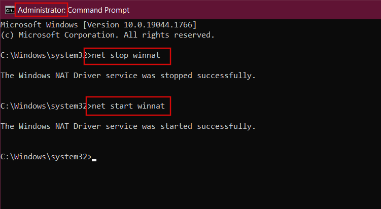

Node.js EACCES error when listening on most ports
I'm testing out an app (hopefully to run on heroku, but am having issues locally as well). It's giving me an EACCES error when it runs http.Server.listen() - but it only occurs on some ports.
So, locally I'm running:
joe@joebuntu:~$ node > var h = require('http').createServer(); > h.listen(900); Error: EACCES, Permission denied at Server._doListen (net.js:1062:5) at net.js:1033:14 at Object.lookup (dns.js:132:45) at Server.listen (net.js:1027:20) at [object Context]:1:3 at Interface.<anonymous> (repl.js:150:22) at Interface.emit (events.js:42:17) at Interface._onLine (readline.js:132:10) at Interface._line (readline.js:387:8) at Interface._ttyWrite (readline.js:564:14)
I don't have anything running on port 900 (or any of the other 20 ports I've tried), so this should work. The weird part is that it does work on some ports. For instance, port 3000 works perfectly.
What would cause this?
Update 1:
I figured out that on my local computer, the EACCES error is coming because I have to run node as root in order to bind to those certain ports. I don't know why this happens, but using sudo fixes it. However, this doesn't explain how I would fix it on Heroku. There is no way to run as root on Heroku, so how can I listen on port 80?
Answer
Running on your workstation
As a general rule, processes running without root privileges cannot bind to ports below 1024.
So try a higher port, or run with elevated privileges via sudo. You can
downgrade privileges after you have bound to the low port using
process.setgid and process.setuid.
Running on heroku
When running your apps on heroku you have to use the port as specified in the PORT environment variable.
See http://devcenter.heroku.com/articles/node-js
const server = require('http').createServer(); const port = process.env.PORT || 3000; server.listen(port, () => console.log(`Listening on ${port}`));
Suggest
#Windows
Another one reason - maybe your port has been excluded by some reasons.
So, try open CMD (command line) under admin rights and run :
net stop winnatnet start winnat

In my case it was enough.
Solution found here : https://medium.com/@Bartleby/ports-are-not-available- listen-tcp-0-0-0-0-3000-165892441b9d